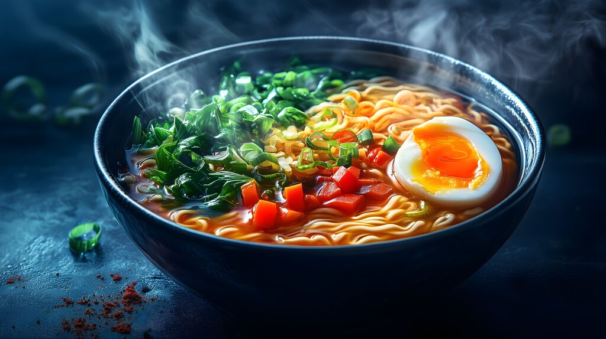

Home
Summer Recipes

Description
What's better than a hot bowl of ramen in a cold winter night?
Here's how I make it when I really crave it but I'm too lazy to do everything from scratch.
Ingredients
For the broth and the noodles:
- Miso paste
- Hot water
- Noodles
For the toppings:
- 1 egg
- Canned corn
- 1 or 2 slices of pork - or tofu
- A bunch of seaweed snacks
- A green of some sort, this could be a pak choi, some spinach, etc...
- Other toppings of choice
Steps
Do this the day before!
Prepare the egg by boiling it. Cover it in soy sauce
(you can dilute it with a little bit of water - things are expensive these days)
and let it sit in in the fridge until you're ready to make your ramen.
Tip!
Lay a piece of paper towel over the soy sauce! This will prevent the part of the egg
that is not covered by the liquid, to brown less than the rest.
- Bring some water to boil and cook the noodles in it for a couple of minutes - or follow the package instructions
- In the meantime, prepare your toppings:
- Cook the protein of your choice and set it aside
- Pan fry the corn until it's nice and roasted
- Take the marinated egg out of the fridge and cut it in half
- Boil your spinach or pan fry your pak choi
- Prepare the rest of your toppings of choice
- Cut the seaweed sheets into thin slices
- Take the noodles out of the water and pour some of the boiling water in a bowl with the miso paste and stir well
- Now it's time to assemble! Add the noodles to the broth and top it with all of your delicious toppings
Your ramen bowl is ready to be slurped! Enjoy!